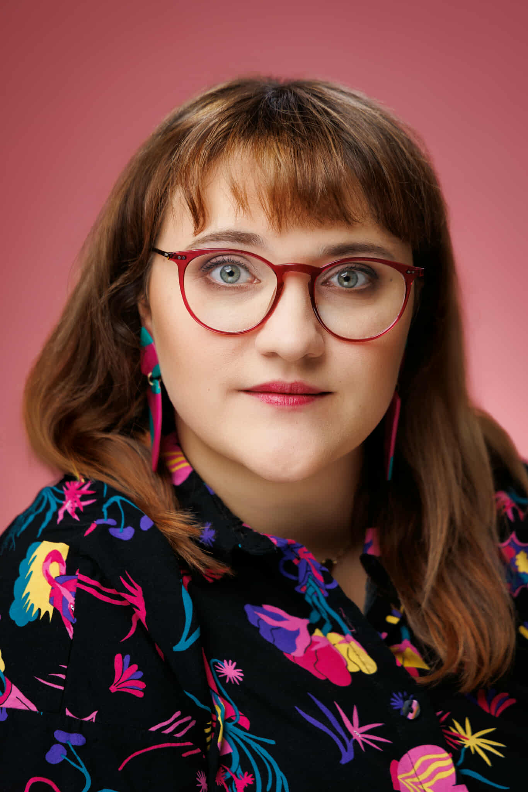
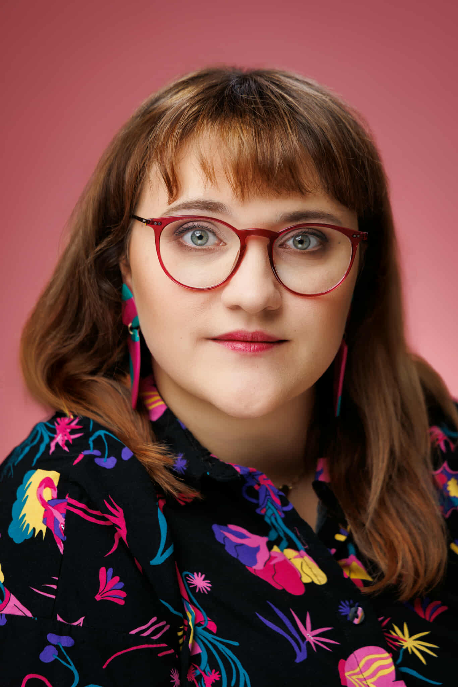

Aga Flora
Olzacka
.jpg) 

I am a therapist, facilitator, and companion of change.
I live in an intercultural relationship and work in diverse,
multicultural settings. I have lived in Italy and
Latvia, and I have studied and trained in
Poland, Italy, the Czech Republic, and
Germany.
I’m endlessly curious about
the world and the people around me. I love asking questions and
searching for answers — especially while being close to nature. The
forest feels like home to me, and water brings me peace.
My guiding values are respect, freedom, love, and
humility. I strive to live by them and to create
spaces where people can meet themselves and each other with
authenticity and care.
I love cooking, walking barefoot, and singing.
My Background
I hold a Bachelor’s degree in Social Animation and
a Master’s degree in Pedagogy with a specialization
in Social Rehabilitation and Psychotherapy. I also
completed postgraduate studies in
Psychosomatics and Somatopsychology, and a
two-level training in Solution-Focused Therapy.
During my studies, I was part of the
Sexology Research Circle,
exploring questions of identity and diversity. My Bachelor’s thesis
focused on stereotypes about lesbians, and my Master’s thesis
examined how foreigners perceive the identity of Gdynia’s residents
within the urban space.
For a time, I considered an
academic career, but life beyond the university called louder — and
so I became a therapist and guide in transformation.
Over the years, I have trained internationally in
embodiment, mindfulness, and nature-based personal
development.
I completed a massage course, and have taken part
in many workshops in areas such as
motivational dialogue, anti-discrimination,
and
Dance Movement Therapy.

My Path
I am a woman of the circle, and a student of
Tanna Jakubowicz-Mount and
Mona Cichoń. For two years, I took part in the
process “Guides on the Path // My Medicine” led by Tanna, during
which I went through my initiation and received the name
Flora Flow – the one who touches with her heart.
Since then, I’ve been walking the path of my own
medicine — learning how to guide myself and how to support others,
especially women, in discovering their inner power and gifts. For
the past four years, I’ve been leading a
women’s development circle.
For many
years, I was part of the
Educational Cha(lle)nge Association, where we
worked to bring more awareness and empathy into education through
workshops, trainings, and conferences.
Today, I
collaborate with:
– Pomorskie Center for Psychotherapy and
Psychoeducation
– Alterway Child Development Studio
– Youth Cooperation Center
– Emigration Museum in Gdynia
In the past, I’ve also worked with
TEB Education, Dovista, LPP, Arla, Lifeworks, and
Citi.
My path has been diverse — I’ve
worked as a
nanny, art teacher, educator, project coordinator,
and trainer.
I’ve led closeness workshops
in Riga, facilitated identity sessions, danced
Contact Improvisation, and even taught
djembe drumming and archery.
All these experiences have shaped how I see the world
— through many perspectives, always with compassion and curiosity.